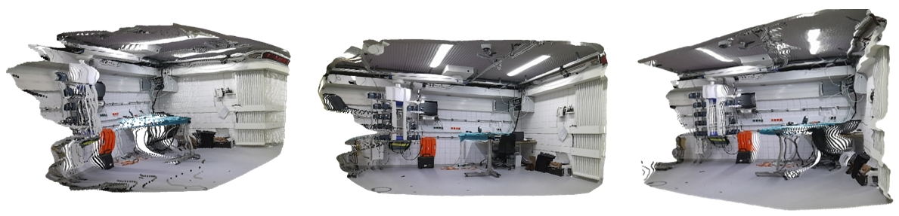
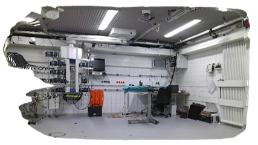

Overview of Real-time Telemedicine System for Full-Scene Operating Room

Figure 1: Sample frames of the reconstructed OR Scene from 4D-OR dataset[1].
TeleOR: a pioneering system designed to achieve high-fidelity, real-time scene reconstruction and transmission amidst obstructions and bandwidth limitations.
- Leveraging inherent scene features for dynamic self-calibration without the need for preset markers.
- Exploiting selective OR reconstruction to dynamically change scene segments to reduce reconstruction complexity.
- Using viewport-adaptive transmission based on real-time client feedback to deliver 3D reconstructions within bandwidth constraints.
Our system can support multiple downstream tasks in telemedicine for example:
- Medical Education
- Remote Monitoring
- Remote Assistance
Publications
The following paper describes our proposed system in depth.
|  |
TeleOR: Real-time Telemedicine System for Full-Scene Operating Room Yixuan Wu*, Kaiyuan Hu*, Qian Shao, Jintai Chen, Danny Z. Chen, and Jian Wu Zhejiang Univeristiy, The Chinese University of Hong Kong, Shenzhen MICCAI 2024. [arXiv] |